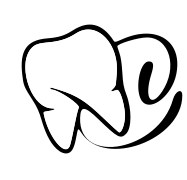
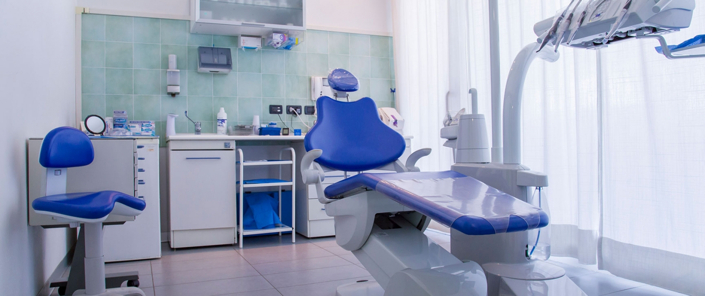
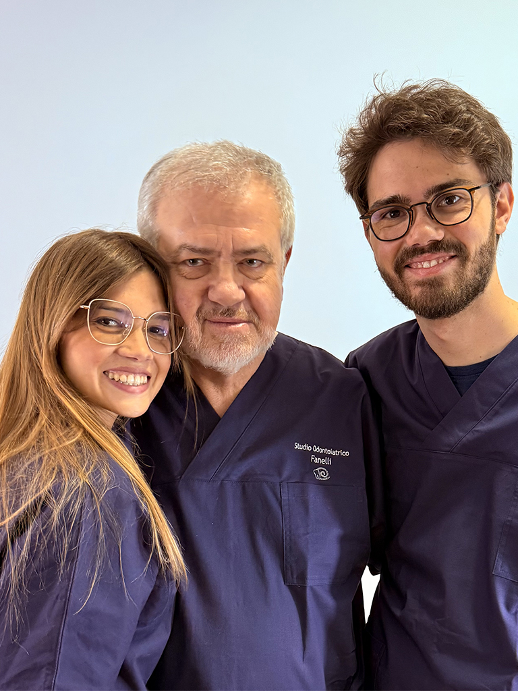

Studio Dentistico Fanelli
Studio dentistico moderno a Foggia. Offriamo cure dentali di alta qualità con tecnologie all'avanguardia e un team esperto.
Via Padre Antonio da Olivadi, 9 - 71121 Foggia (FG)


Studio dentistico moderno a Foggia. Offriamo cure dentali di alta qualità con tecnologie all'avanguardia e un team esperto.
Via Padre Antonio da Olivadi, 9 - 71121 Foggia (FG)
Il futuro dell'odontoiatria è qui. La nostra tecnologia CAD/CAM permette di realizzare protesi dentali perfette in tempi record, direttamente nel nostro studio.
Scansione digitale precisa del dente danneggiato, senza impronte fastidiose.
Design computerizzato della protesi con software all'avanguardia.
Realizzazione della protesi in ceramica di alta qualità.
Cementazione della protesi finale con perfetto adattamento.
Software CAD avanzato per una precisione millimetrica nella progettazione delle protesi.
Dalla scansione alla protesi finale applicata, tutto in una sola seduta.
Trattamenti preventivi e di igiene orale per mantenere un sorriso sano e prevenire patologie dentali.
Trattamenti per il restauro e la cura dei denti danneggiati, preservando la struttura dentale naturale.
Soluzioni chirurgiche avanzate per la sostituzione di denti mancanti e trattamenti di chirurgia orale specialistica.
Soluzioni protesiche moderne per il ripristino della funzione masticatoria e dell'estetica del sorriso.
Correzione di malocclusioni, allineamento dentale e trattamento dei disturbi dell'articolazione temporo-mandibolare.
Cura delle malattie gengivali e parodontali, insieme ai trattamenti odontoiatrici specializzati per i più piccoli.
Il nostro studio dentistico è composto da un team di professionisti altamente qualificati, pronti a prendersi cura della tua salute orale con competenza e dedizione.
Professionisti specializzati in costante aggiornamento.
Utilizziamo attrezzature all'avanguardia per garantire diagnosi e trattamenti precisi.
Ogni paziente è unico, e offriamo piani di trattamento su misura.

2000+
40+
24/7
100%
Siamo qui per prenderci cura del tuo sorriso. Prenota la tua visita o contattaci per qualsiasi informazione.
Telefono
+39 0881 123456
Lun-Ven: 9:00 - 18:00
Indirizzo
Via Padre Antonio da Olivadi, 9 - 71121 Foggia (FG)
Visite su appuntamento
info@studiodentisticofanelli.it
Rispondiamo entro 24 ore
Orari di Apertura
Lun-Ven: 9:00 - 18:00
Sabato e Domenica chiuso